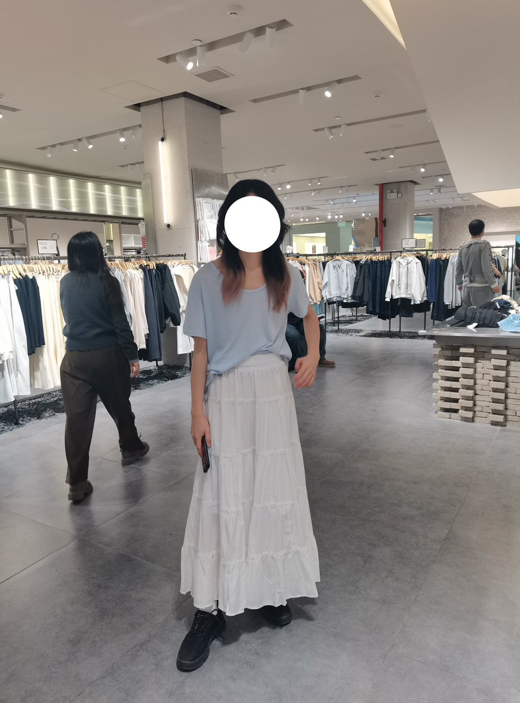

🍀🍥竹蜻蜓🍥🍀
@zqtlovekris99
@ILoveUAllConfes 非二元的话，穿裙子留长发在现实里只会被当成女性吧。。不会觉得难受吗。。

均🌸
@ILoveUAllConfes
反正，你别管别人怎么看，至少这样挺好看的不是吗？身材比例不好可以拿裙子遮住还可以拉长视觉比例岂不美哉？
非二元是这样的，我不喜欢被社会定义。不过，说是这样，如果真的要见人为了避免给别人造成负担从而影响到我，还是一开始就不会这样就是了…环境如此，为了自保不得不牺牲自由。所有人都是。 https://t.co/cdZIzqFj0U